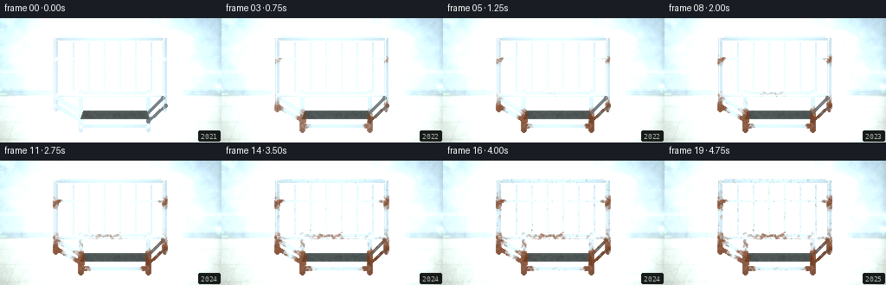
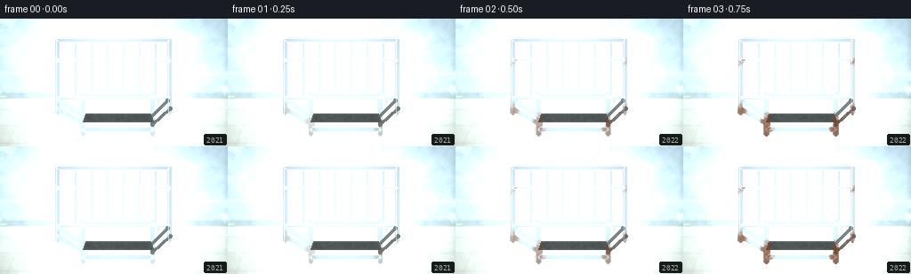
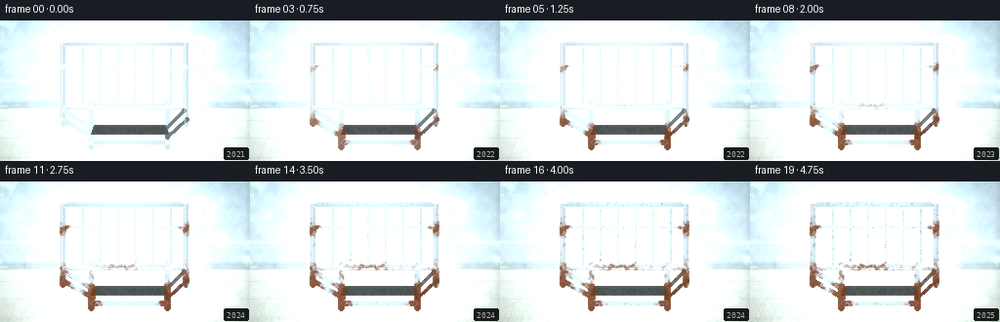
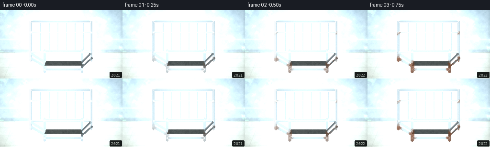
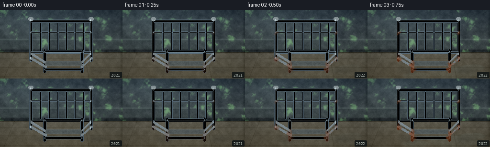
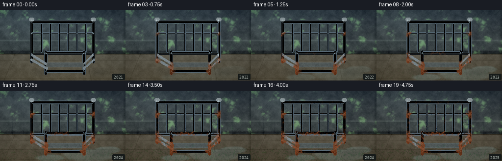
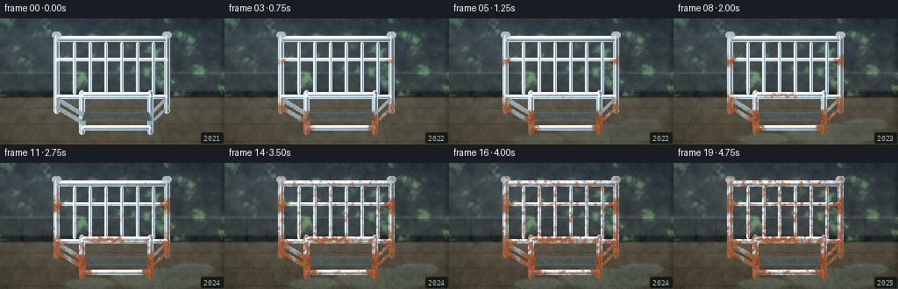
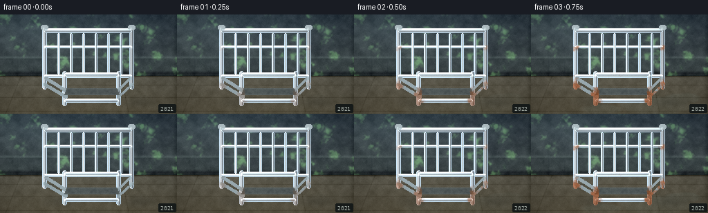

CODING AGENTS AS PIXEL WORLD MODELS
traex/DeepSeek-V4.1-Flash · phygen_160
点击播放 · 原生 RGB 像素
逐轮保存的候选
回放视频、检查图与代码变化。
每份候选均可单独播放。实际图片检查记录在下方工具轨迹中。
候选 01播放与检查图
点击播放 · 原生 RGB 像素


展开代码变化
--- 上一保存版本
+++ 本次保存版本
@@ -0,0 +1,385 @@
+"""Procedurally render a five-second oxidation timelapse for PixelWorld."""
+
+from pathlib import Path
+
+import cv2
+import numpy as np
+from PIL import Image, ImageDraw, ImageFilter, ImageFont
+from scipy.ndimage import gaussian_filter
+
+import artifact_io
+
+
+HERE = Path(__file__).resolve().parent
+W, H, N, FPS = 256, 144, 20, 4
+rng = np.random.default_rng(160)
+
+
+def smoothstep(edge0, edge1, x):
+ t = np.clip((x - edge0) / (edge1 - edge0), 0, 1)
+ return t * t * (3 - 2 * t)
+
+
+def fbm(h, w, scale, octaves=5, seed=0):
+ r = np.random.default_rng(seed)
+ total = np.zeros((h, w), np.float32)
+ weight = 0.0
+ for octave in range(octaves):
+ grid_h = max(3, int(h / scale * (2**octave)) + 3)
+ grid_w = max(3, int(w / scale * (2**octave)) + 3)
+ small = r.random((grid_h, grid_w), dtype=np.float32)
+ layer = cv2.resize(small, (w, h), interpolation=cv2.INTER_CUBIC)
+ amount = 0.56**octave
+ total += layer * amount
+ weight += amount
+ total /= weight
+ return (total - total.min()) / (total.max() - total.min() + 1e-6)
+
+
+def metal_mask(x0, x1, y0, y1, radius=2):
+ mask = Image.new("L", (W, H), 0)
+ draw = ImageDraw.Draw(mask)
+ draw.rounded_rectangle((x0, y0, x1, y1), radius=radius, fill=255)
+ return np.asarray(mask, np.float32) / 255.0
+
+
+def capsule_mask(points, radius):
+ mask = Image.new("L", (W, H), 0)
+ draw = ImageDraw.Draw(mask)
+ points = [(int(round(x)), int(round(y))) for x, y in points]
+ draw.line(points, fill=255, width=int(radius * 2 + 1), joint="curve")
+ for x, y in points:
+ rr = int(round(radius))
+ draw.ellipse((x - rr, y - rr, x + rr, y + rr), fill=255)
+ return np.asarray(mask, np.float32) / 255.0
+
+
+def additive_light(img, center, radius, color, strength):
+ yy, xx = np.mgrid[:H, :W]
+ d2 = (xx - center[0]) ** 2 + (yy - center[1]) ** 2
+ glow = np.exp(-d2 / (2 * radius * radius))[..., None]
+ return img + glow * np.asarray(color, np.float32) * strength
+
+
+def draw_straight_metal(img, x0, x1, y0, y1, z, light_x):
+ """Draw a horizontal rounded rectangular steel member."""
+ x0, x1, y0, y1 = map(lambda v: int(round(v)), (x0, x1, y0, y1))
+ mask = metal_mask(x0, x1, y0, y1, min(3, (y1 - y0) // 2))
+ xx = np.arange(W, dtype=np.float32)[None, :]
+ yy = np.arange(H, dtype=np.float32)[:, None]
+ light = np.exp(-((xx - light_x) / 98) ** 2)
+ vertical = np.clip((yy - y0) / max(1, y1 - y0), 0, 1)
+ core = 0.64 + 0.34 * np.exp(-((vertical - 0.25) / 0.19) ** 2)
+ lower_dark = 0.42 + 0.42 * (1 - vertical)
+ shade = np.broadcast_to(np.where(vertical < 0.58, core, lower_dark), (H, W)).copy()
+ shade *= 0.80 + 0.24 * light
+ color = np.stack((shade * 1.03, shade * 1.08, shade * 1.11), -1)
+ img[:] = img * (1 - mask[..., None]) + color * mask[..., None]
+ rim = np.clip((mask - np.roll(mask, 1, 0)) + (mask - np.roll(mask, -1, 0)), 0, 1)
+ img += rim[..., None] * np.array([95, 112, 124], np.float32)
+ return mask
+
+
+def draw_vertical_metal(img, cx, y0, y1, halfw, light_x):
+ x0, x1 = int(cx - halfw), int(cx + halfw)
+ y0, y1 = int(y0), int(y1)
+ mask = metal_mask(x0, x1, y0, y1, min(3, halfw))
+ yy, xx = np.mgrid[:H, :W]
+ across = np.clip((xx - x0) / max(1, x1 - x0), 0, 1)
+ light = np.exp(-((xx - light_x) / 90) ** 2)
+ shade = 0.48 + 0.46 * np.exp(-((across - 0.34) / 0.18) ** 2)
+ shade *= 0.80 + 0.22 * light
+ color = np.stack((shade * 1.04, shade * 1.09, shade * 1.12), -1)
+ img[:] = img * (1 - mask[..., None]) + color * mask[..., None]
+ rim = np.clip((mask - np.roll(mask, 1, 1)) + (mask - np.roll(mask, -1, 1)), 0, 1)
+ img += rim[..., None] * np.array([80, 96, 108], np.float32)
+ return mask
+
+
+def background(seed):
+ yy, xx = np.mgrid[:H, :W].astype(np.float32)
+ grain = fbm(H, W, 4, 5, seed)
+ coarse = fbm(H, W, 17, 4, seed + 1)
+
+ img = np.empty((H, W, 3), np.float32)
+ img[:] = np.array([70, 77, 75], np.float32)
+ img += (coarse[..., None] - 0.5) * np.array([23, 25, 21], np.float32)
+ img += (grain[..., None] - 0.5) * 8
+
+ # Painted concrete wall, with a horizontal masonry band and a damp lower zone.
+ wall_h = 89
+ wall = np.zeros((H, W), np.float32)
+ wall[:wall_h] = 1
+ wet = smoothstep(36, wall_h, yy) * (0.38 + 0.42 * coarse)
+ img[..., 0] -= wall * wet * 11
+ img[..., 1] -= wall * wet * 8
+ img[..., 2] -= wall * wet * 5
+
+ band_y = 62
+ band = np.exp(-((yy - band_y) / 2.1) ** 2)
+ img += band[..., None] * np.array([18, 20, 18], np.float32)
+ img -= np.exp(-((yy - band_y - 2) / 1.0) ** 2)[..., None] * 10
+
+ # Wall stains and their dark centers.
+ stains = np.zeros((H, W), np.float32)
+ for cx, cy, rx, ry, a in [
+ (36, 40, 22, 28, 0.60),
+ (198, 52, 32, 25, 0.46),
+ (112, 73, 17, 12, 0.48),
+ (242, 35, 20, 35, 0.38),
+ ]:
+ stains += a * np.exp(-(((xx - cx) / rx) ** 2 + ((yy - cy) / ry) ** 2) * 2.0)
+ stains *= wall
+ img -= stains[..., None] * np.array([18, 20, 17], np.float32)
+ img += (smoothstep(0.63, 0.86, coarse) * wall * 9)[..., None] * np.array([4, 7, 3], np.float32)
+
+ # Floor: brown-gray concrete with perspective seams.
+ floor_y = wall_h
+ img[floor_y:] = np.array([92, 88, 76], np.float32)
+ floor_noise = (fbm(H, W, 8, 5, seed + 8)[..., None] - 0.5) * 22
+ img += floor_noise
+ perspective = (yy - floor_y) / (H - floor_y)
+ img[..., 0] += 7 * perspective
+ img[..., 1] += 3 * perspective
+ img[..., 2] -= 4 * perspective
+
+ # A dark skirting shadow and wall/floor junction.
+ skirting = np.exp(-((yy - (wall_h - 4)) / 3.0) ** 2)
+ img -= skirting[..., None] * np.array([31, 34, 31], np.float32)
+ junction = np.exp(-((yy - wall_h) / 1.4) ** 2)
+ img -= junction[..., None] * 35
+
+ # Floor tile joints, radiating away from the camera.
+ floor_mask = (yy >= wall_h).astype(np.float32)
+ for x_at_horizon in (-80, 30, 175, 295):
+ t = np.clip((yy - wall_h) / (H - wall_h), 0, 1)
+ x_line = x_at_horizon + (x_at_horizon - W / 2) * t * 0.23
+ line = np.exp(-((xx - x_line) / 0.75) ** 2) * floor_mask
+ img -= line[..., None] * 13
+ for y in (102, 120, 140):
+ line = np.exp(-((yy - y) / 0.75) ** 2) * floor_mask
+ img -= line[..., None] * 12
+
+ # Low, diffuse basement illumination.
+ img = additive_light(img, (48, 14), 45, (50, 55, 50), 0.36)
+ img = additive_light(img, (238, 35), 70, (23, 29, 27), 0.28)
+ img -= np.clip((xx - 250) / 8, 0, 1)[..., None] * 18
+ img -= np.clip((20 - yy) / 8, 0, 1)[..., None] * 8
+ return np.clip(img, 0, 255)
+
+
+def floor_contact(x, y, radius):
+ yy, xx = np.mgrid[:H, :W]
+ d = np.sqrt(((xx - x) / radius) ** 2 + ((yy - y) / (radius * 0.38)) ** 2)
+ return np.clip(1 - d, 0, 1)
+
+
+def render_frame(t):
+ """t runs from 0 (new steel) to 1 (heavily oxidized)."""
+ img = background(160).copy()
+ yy, xx = np.mgrid[:H, :W].astype(np.float32)
+
+ # Soft, cool window light entering from upper left.
+ wall_light = np.exp(-(((xx - 36) / 61) ** 2 + ((yy - 23) / 36) ** 2))
+ img += wall_light[..., None] * np.array([11, 13, 12], np.float32)
+
+ # Room grime and a slow damp darkening.
+ img *= 1 - (0.035 + 0.075 * t) * smoothstep(85, 130, yy)[..., None]
+ img[..., 2] *= 1 - 0.07 * t
+ img[..., 1] *= 1 - 0.045 * t
+
+ # Puddle grows from the right foreground and around the legs.
+ puddle_field = fbm(H, W, 8, 4, 40)
+ puddle_mask = np.zeros((H, W), np.float32)
+ for i, (cx, cy, rx, ry) in enumerate([
+ (181, 132, 70, 17),
+ (219, 121, 35, 10),
+ (102, 137, 39, 9),
+ ]):
+ blob = np.clip(1 - (((xx - cx) / rx) ** 2 + ((yy - cy) / ry) ** 2), 0, 1)
+ puddle_mask = np.maximum(puddle_mask, blob * (0.60 + 0.40 * puddle_field))
+ puddle_mask = smoothstep(0.16, 0.54, puddle_mask) * smoothstep(0.03, 0.55, t)
+ puddle_mask *= smoothstep(89, 101, yy)
+ img = img * (1 - 0.24 * puddle_mask[..., None]) + puddle_mask[..., None] * np.array(
+ [34, 42, 42], np.float32
+ )
+ rim = np.clip(gaussian_filter(puddle_mask, 1.2) - gaussian_filter(puddle_mask, 3.0), 0, 1)
+ img += rim[..., None] * np.array([21, 28, 29], np.float32)
+
+ # Long contact shadows anchor the object.
+ for cx in (72, 184):
+ shadow = floor_contact(cx + 16, 127, 34) * 0.35
+ img *= 1 - shadow[..., None] * np.array([0.34, 0.31, 0.27], np.float32)
+
+ # Headboard: two uprights, top rail, lower rail and five slim bars.
+ light_x = 88
+ verticals = [(64, 18, 108), (190, 18, 108)]
+ horizontals = [(64, 190, 20, 26), (64, 190, 87, 91), (64, 190, 45, 48)]
+ bars = [(85 + i * 18, 27, 86) for i in range(6)]
+ steel_layers = []
+ for cx, y0, y1 in verticals:
+ steel_layers.append(draw_vertical_metal(img, cx, y0, y1, 3, light_x))
+ for x0, x1, y0, y1 in horizontals:
+ steel_layers.append(draw_straight_metal(img, x0, x1, y0, y1, 0.5, light_x))
+ for cx, y0, y1 in bars:
+ steel_layers.append(draw_vertical_metal(img, cx, y0, y1, 1.2, light_x))
+
+ # Headboard finials and joint caps.
+ cap_mask = np.zeros((H, W), np.float32)
+ for cx in (64, 190):
+ yy0, yy1 = 15, 22
+ xx0, xx1 = cx - 5, cx + 5
+ m = metal_mask(xx0, xx1, yy0, yy1, 4)
+ cap_mask = np.maximum(cap_mask, m)
+ img[:] = img * (1 - m[..., None]) + m[..., None] * np.array([149, 158, 160], np.float32)
+ steel_layers.append(cap_mask)
+
+ # Footboard, lower and closer to the viewer.
+ foot_verticals = [(93, 82, 132), (171, 82, 132)]
+ foot_horizontals = [(93, 171, 84, 89), (93, 171, 122, 127)]
+ for cx, y0, y1 in foot_verticals:
+ steel_layers.append(draw_vertical_metal(img, cx, y0, y1, 3, 103))
+ for x0, x1, y0, y1 in foot_horizontals:
+ steel_layers.append(draw_straight_metal(img, x0, x1, y0, y1, 0.7, 103))
+
+ # Side rails receding in perspective.
+ side_paths = [
+ [(66, 92), (96, 111), (95, 119), (64, 101)],
+ [(188, 92), (169, 111), (171, 119), (191, 101)],
+ ]
+ for path in side_paths:
+ m = capsule_mask(path, 2.2)
+ steel_layers.append(m)
+ shade = 0.55 + 0.30 * np.exp(-((xx - 126) / 120) ** 2)
+ img[:] = img * (1 - m[..., None]) + shade[..., None] * np.array([139, 151, 156], np.float32)
+ img += (m * (0.7 + 0.3 * np.exp(-((yy - 95) / 5) ** 2)))[..., None] * 18
+
+ # Thin mattress deck, visible as an austere dark surface between rails.
+ deck = np.array(
+ [[96, 107], [169, 107], [172, 116], [93, 116]], dtype=np.int32
+ )
+ deck_mask = Image.new("L", (W, H), 0)
+ ImageDraw.Draw(deck_mask).polygon([tuple(p) for p in deck], fill=255)
+ dm = np.asarray(deck_mask, np.float32) / 255
+ deck_texture = fbm(H, W, 3, 3, 82)
+ deck_color = np.stack(
+ (72 + deck_texture * 19, 78 + deck_texture * 19, 78 + deck_texture * 17), -1
+ )
+ img[:] = img * (1 - dm[..., None]) + deck_color * dm[..., None]
+ deck_rim = np.clip(dm - gaussian_filter(dm, 1.3), 0, 1)
+ img += deck_rim[..., None] * 34
+
+ # Bolts at exposed joints.
+ bolt_mask = np.zeros((H, W), np.float32)
+ for x, y in [(64, 47), (190, 47), (93, 88), (171, 88), (93, 125), (171, 125)]:
+ m = np.exp(-(((xx - x) / 1.7) ** 2 + ((yy - y) / 1.7) ** 2))
+ bolt_mask = np.maximum(bolt_mask, m)
+ img += bolt_mask[..., None] * np.array([54, 60, 60], np.float32)
+
+ steel = np.maximum.reduce(steel_layers)
+ # Specular streaks run along the steel and lose energy as the surface corrodes.
+ steel_spec = np.zeros((H, W), np.float32)
+ for cx in (64, 190):
+ steel_spec += np.exp(-((xx - (cx - 1.1)) / 0.55) ** 2) * ((yy > 18) & (yy < 110))
+ for x0, x1, y0, y1 in horizontals:
+ steel_spec += np.exp(-((yy - (y0 + 1.5)) / 0.5) ** 2) * ((xx > x0) & (xx < x1))
+ steel_spec *= steel * (0.82 - 0.62 * t)
+ img += steel_spec[..., None] * np.array([92, 103, 105], np.float32)
+
+ # Oxidation starts at floor contacts, bolts, and joints, then spreads upward.
+ rust_noise = fbm(H, W, 3.5, 5, 93)
+ fine = fbm(H, W, 1.6, 3, 94)
+ growth = smoothstep(0.04, 1.0, t)
+ hotspots = np.zeros((H, W), np.float32)
+ for x, y, sx, sy, amount in [
+ (64, 125, 9, 31, 1.00),
+ (190, 125, 9, 29, 0.94),
+ (93, 130, 9, 25, 0.92),
+ (171, 130, 8, 24, 0.90),
+ (64, 48, 9, 7, 0.48),
+ (190, 48, 9, 7, 0.48),
+ (125, 88, 26, 6, 0.28),
+ ]:
+ hotspots += amount * np.exp(-(((xx - x) / sx) ** 2 + ((yy - y) / sy) ** 2))
+ rust_score = hotspots * (0.40 + 0.85 * rust_noise) + growth * (0.32 * rust_noise + 0.09 * fine)
+ rust_mask = smoothstep(0.20, 0.55, rust_score) * steel * smoothstep(0.0, 0.30, t)
+ rust_color = np.stack(
+ (
+ 91 + 63 * fine + 25 * rust_noise,
+ 47 + 29 * fine + 12 * rust_noise,
+ 23 + 12 * fine + 8 * rust_noise,
+ ),
+ -1,
+ )
+ img = img * (1 - 0.84 * rust_mask[..., None]) + rust_color * (0.84 * rust_mask[..., None])
+ img -= (rust_mask * (1 - rust_noise) * 0.30)[..., None] * np.array([32, 24, 16], np.float32)
+
+ # Pitting and chipped dark spots become legible in the late frames.
+ pits = (fine > 0.77) * steel * smoothstep(0.42, 0.95, t)
+ img -= pits[..., None] * np.array([44, 40, 31], np.float32)
+
+ # Condensation: a restrained network of highlights that thickens over time.
+ drops = np.zeros((H, W), np.float32)
+ for i in range(32):
+ cx = rng.uniform(5, W - 6)
+ cy = rng.uniform(28, 132)
+ rr = rng.uniform(0.45, 1.5)
+ drops += np.exp(-(((xx - cx) / rr) ** 2 + ((yy - cy) / (rr * 1.25)) ** 2))
+ drop_alpha = 0.10 + 0.20 * t
+ img += (drops * drop_alpha * (0.55 + 0.45 * steel))[..., None] * np.array(
+ [32, 39, 40], np.float32
+ )
+
+ # Mold in the damp corners, especially behind the footboard.
+ mold_noise = fbm(H, W, 2.4, 5, 170)
+ mold_field = smoothstep(0.54, 0.79, mold_noise)
+ corner_bias = smoothstep(94, 132, yy) * smoothstep(0.12, 0.55, xx)
+ mold = mold_field * corner_bias * smoothstep(0.26, 0.86, t) * (1 - steel)
+ img -= mold[..., None] * np.array([27, 20, 19], np.float32)
+ img += (mold * (mold_noise > 0.70))[..., None] * np.array([10, 17, 7], np.float32)
+
+ # A few water streaks down the wall and mineral deposits at the base.
+ for cx, width, strength in [(25, 1.2, 0.55), (48, 0.9, 0.30), (218, 1.6, 0.42)]:
+ streak = np.exp(-((xx - cx) / width) ** 2) * smoothstep(35, 87, yy) * (yy < 90)
+ img -= streak[..., None] * np.array([18, 18, 15], np.float32) * (0.20 + 0.50 * t)
+
+ # Dust motes and very fine sensor texture keep the flat surfaces photographic.
+ texture = rng.normal(0, 1, (H, W, 1)).astype(np.float32)
+ img += texture * 2.0
+
+ # Gentle vignette and a cool, damp color grade.
+ vignette = 1 - 0.22 * (((xx - W / 2) / (W * 0.65)) ** 2 + ((yy - H / 2) / (H * 0.72)) ** 2)
+ img *= vignette[..., None]
+ img[..., 0] *= 0.985
+ img[..., 1] *= 1.005
+ img[..., 2] *= 1.015
+
+ # Small archival year stamp in the corner, kept secondary to the physical change.
+ out = Image.fromarray(np.uint8(np.clip(img, 0, 255))).convert("RGB")
+ draw = ImageDraw.Draw(out)
+ year = 2021 + int(round(t * 4))
+ font = ImageFont.truetype("/usr/share/fonts/truetype/dejavu/DejaVuSansMono.ttf", 8)
+ label = f"{year}"
+ bbox = draw.textbbox((0, 0), label, font=font)
+ tx = W - 5 - (bbox[2] - bbox[0])
+ ty = H - 6 - (bbox[3] - bbox[1])
+ draw.rounded_rectangle((tx - 3, ty - 2, W - 2, H - 2), radius=2, fill=(22, 26, 25))
+ draw.text((tx, ty), label, font=font, fill=(166, 174, 167))
+
+ frame = np.asarray(out).astype(np.float32)
+ # A tiny amount of bloom and film grain makes the low-resolution image cohere.
+ bloom = gaussian_filter(np.clip(frame - 125, 0, None), (1.3, 1.3, 0))
+ frame += bloom * 0.10
+ return np.uint8(np.clip(frame, 0, 255))
+
+
+def main():
+ # Ease the first two frames so the "new steel" state reads clearly.
+ times = np.linspace(0, 1, N) ** 0.82
+ frames = np.stack([render_frame(float(t)) for t in times])
+ artifact_io.save(frames, HERE)
+ print(f"wrote {N} frames to {HERE}")
+
+
+if __name__ == "__main__":
+ main()
候选 02播放与检查图
点击播放 · 原生 RGB 像素

展开代码变化
--- 上一保存版本
+++ 本次保存版本
@@ -161,8 +161,8 @@
img -= line[..., None] * 12
# Low, diffuse basement illumination.
- img = additive_light(img, (48, 14), 45, (50, 55, 50), 0.36)
- img = additive_light(img, (238, 35), 70, (23, 29, 27), 0.28)
+ img = additive_light(img, (48, 14), 45, (14, 16, 15), 0.20)
+ img = additive_light(img, (238, 35), 70, (8, 10, 9), 0.12)
img -= np.clip((xx - 250) / 8, 0, 1)[..., None] * 18
img -= np.clip((20 - yy) / 8, 0, 1)[..., None] * 8
return np.clip(img, 0, 255)
候选 03播放与检查图
点击播放 · 原生 RGB 像素


展开代码变化
--- 上一保存版本
+++ 本次保存版本
@@ -251,7 +251,7 @@
m = capsule_mask(path, 2.2)
steel_layers.append(m)
shade = 0.55 + 0.30 * np.exp(-((xx - 126) / 120) ** 2)
- img[:] = img * (1 - m[..., None]) + shade[..., None] * np.array([139, 151, 156], np.float32)
+ img[:] = img * (1 - m[..., None]) + (shade[..., None] * np.array([139, 151, 156], np.float32))
img += (m * (0.7 + 0.3 * np.exp(-((yy - 95) / 5) ** 2)))[..., None] * 18
# Thin mattress deck, visible as an austere dark surface between rails.
候选 04播放与检查图
点击播放 · 原生 RGB 像素

展开代码变化
--- 上一保存版本
+++ 本次保存版本
@@ -252,7 +252,8 @@
steel_layers.append(m)
shade = 0.55 + 0.30 * np.exp(-((xx - 126) / 120) ** 2)
img[:] = img * (1 - m[..., None]) + (shade[..., None] * np.array([139, 151, 156], np.float32))
- img += (m * (0.7 + 0.3 * np.exp(-((yy - 95) / 5) ** 2)))[..., None] * 18
+ highlight = m * (0.7 + 0.3 * np.exp(-((yy - 95) / 5) ** 2))
+ img += highlight[..., None] * np.float32(18.0)
# Thin mattress deck, visible as an austere dark surface between rails.
deck = np.array(
候选 05播放与检查图
点击播放 · 原生 RGB 像素


展开代码变化
--- 上一保存版本
+++ 本次保存版本
@@ -251,7 +251,8 @@
m = capsule_mask(path, 2.2)
steel_layers.append(m)
shade = 0.55 + 0.30 * np.exp(-((xx - 126) / 120) ** 2)
- img[:] = img * (1 - m[..., None]) + (shade[..., None] * np.array([139, 151, 156], np.float32))
+ rail_color = shade[..., None] * np.array([139, 151, 156], np.float32)
+ img[:] = img * (1 - m[..., None]) + rail_color * m[..., None]
highlight = m * (0.7 + 0.3 * np.exp(-((yy - 95) / 5) ** 2))
img += highlight[..., None] * np.float32(18.0)
候选 06播放与检查图
点击播放 · 原生 RGB 像素

展开代码变化
--- 上一保存版本
+++ 本次保存版本
@@ -73,7 +73,7 @@
lower_dark = 0.42 + 0.42 * (1 - vertical)
shade = np.broadcast_to(np.where(vertical < 0.58, core, lower_dark), (H, W)).copy()
shade *= 0.80 + 0.24 * light
- color = np.stack((shade * 1.03, shade * 1.08, shade * 1.11), -1)
+ color = np.stack((shade * 1.30, shade * 1.36, shade * 1.40), -1)
img[:] = img * (1 - mask[..., None]) + color * mask[..., None]
rim = np.clip((mask - np.roll(mask, 1, 0)) + (mask - np.roll(mask, -1, 0)), 0, 1)
img += rim[..., None] * np.array([95, 112, 124], np.float32)
@@ -89,7 +89,7 @@
light = np.exp(-((xx - light_x) / 90) ** 2)
shade = 0.48 + 0.46 * np.exp(-((across - 0.34) / 0.18) ** 2)
shade *= 0.80 + 0.22 * light
- color = np.stack((shade * 1.04, shade * 1.09, shade * 1.12), -1)
+ color = np.stack((shade * 1.33, shade * 1.40, shade * 1.44), -1)
img[:] = img * (1 - mask[..., None]) + color * mask[..., None]
rim = np.clip((mask - np.roll(mask, 1, 1)) + (mask - np.roll(mask, -1, 1)), 0, 1)
img += rim[..., None] * np.array([80, 96, 108], np.float32)
@@ -231,7 +231,7 @@
xx0, xx1 = cx - 5, cx + 5
m = metal_mask(xx0, xx1, yy0, yy1, 4)
cap_mask = np.maximum(cap_mask, m)
- img[:] = img * (1 - m[..., None]) + m[..., None] * np.array([149, 158, 160], np.float32)
+ img[:] = img * (1 - m[..., None]) + m[..., None] * np.array([188, 199, 202], np.float32)
steel_layers.append(cap_mask)
# Footboard, lower and closer to the viewer.
@@ -251,7 +251,7 @@
m = capsule_mask(path, 2.2)
steel_layers.append(m)
shade = 0.55 + 0.30 * np.exp(-((xx - 126) / 120) ** 2)
- rail_color = shade[..., None] * np.array([139, 151, 156], np.float32)
+ rail_color = shade[..., None] * np.array([177, 192, 197], np.float32)
img[:] = img * (1 - m[..., None]) + rail_color * m[..., None]
highlight = m * (0.7 + 0.3 * np.exp(-((yy - 95) / 5) ** 2))
img += highlight[..., None] * np.float32(18.0)
@@ -303,13 +303,13 @@
(125, 88, 26, 6, 0.28),
]:
hotspots += amount * np.exp(-(((xx - x) / sx) ** 2 + ((yy - y) / sy) ** 2))
- rust_score = hotspots * (0.40 + 0.85 * rust_noise) + growth * (0.32 * rust_noise + 0.09 * fine)
- rust_mask = smoothstep(0.20, 0.55, rust_score) * steel * smoothstep(0.0, 0.30, t)
+ rust_score = hotspots * (0.40 + 0.85 * rust_noise) + growth * (0.50 * rust_noise + 0.13 * fine)
+ rust_mask = smoothstep(0.20, 0.52, rust_score) * steel * smoothstep(0.0, 0.28, t)
rust_color = np.stack(
(
- 91 + 63 * fine + 25 * rust_noise,
- 47 + 29 * fine + 12 * rust_noise,
- 23 + 12 * fine + 8 * rust_noise,
+ 118 + 68 * fine + 24 * rust_noise,
+ 58 + 33 * fine + 13 * rust_noise,
+ 25 + 14 * fine + 8 * rust_noise,
),
-1,
)
候选 07播放与检查图
候选 08播放与检查图
点击播放 · 原生 RGB 像素
展开代码变化
--- 上一保存版本
+++ 本次保存版本
@@ -73,7 +73,7 @@
lower_dark = 0.42 + 0.42 * (1 - vertical)
shade = np.broadcast_to(np.where(vertical < 0.58, core, lower_dark), (H, W)).copy()
shade *= 0.80 + 0.24 * light
- color = np.stack((shade * 1.30, shade * 1.36, shade * 1.40), -1)
+ color = np.stack((shade * 1.08, shade * 1.13, shade * 1.17), -1) * 255.0
img[:] = img * (1 - mask[..., None]) + color * mask[..., None]
rim = np.clip((mask - np.roll(mask, 1, 0)) + (mask - np.roll(mask, -1, 0)), 0, 1)
img += rim[..., None] * np.array([95, 112, 124], np.float32)
@@ -89,7 +89,7 @@
light = np.exp(-((xx - light_x) / 90) ** 2)
shade = 0.48 + 0.46 * np.exp(-((across - 0.34) / 0.18) ** 2)
shade *= 0.80 + 0.22 * light
- color = np.stack((shade * 1.33, shade * 1.40, shade * 1.44), -1)
+ color = np.stack((shade * 1.08, shade * 1.13, shade * 1.17), -1) * 255.0
img[:] = img * (1 - mask[..., None]) + color * mask[..., None]
rim = np.clip((mask - np.roll(mask, 1, 1)) + (mask - np.roll(mask, -1, 1)), 0, 1)
img += rim[..., None] * np.array([80, 96, 108], np.float32)
候选 09播放与检查图
候选 10播放与检查图
点击播放 · 原生 RGB 像素


展开代码变化
--- 上一保存版本
+++ 本次保存版本
@@ -12,9 +12,6 @@
HERE = Path(__file__).resolve().parent
W, H, N, FPS = 256, 144, 20, 4
-rng = np.random.default_rng(160)
-
-
def smoothstep(edge0, edge1, x):
t = np.clip((x - edge0) / (edge1 - edge0), 0, 1)
return t * t * (3 - 2 * t)
@@ -322,10 +319,11 @@
# Condensation: a restrained network of highlights that thickens over time.
drops = np.zeros((H, W), np.float32)
+ drop_rng = np.random.default_rng(161)
for i in range(32):
- cx = rng.uniform(5, W - 6)
- cy = rng.uniform(28, 132)
- rr = rng.uniform(0.45, 1.5)
+ cx = drop_rng.uniform(5, W - 6)
+ cy = drop_rng.uniform(28, 132)
+ rr = drop_rng.uniform(0.45, 1.5)
drops += np.exp(-(((xx - cx) / rr) ** 2 + ((yy - cy) / (rr * 1.25)) ** 2))
drop_alpha = 0.10 + 0.20 * t
img += (drops * drop_alpha * (0.55 + 0.45 * steel))[..., None] * np.array(
@@ -346,7 +344,7 @@
img -= streak[..., None] * np.array([18, 18, 15], np.float32) * (0.20 + 0.50 * t)
# Dust motes and very fine sensor texture keep the flat surfaces photographic.
- texture = rng.normal(0, 1, (H, W, 1)).astype(np.float32)
+ texture = np.random.default_rng(162).normal(0, 1, (H, W, 1)).astype(np.float32)
img += texture * 2.0
# Gentle vignette and a cool, damp color grade.
可观测工具轨迹
实际执行的命令与返回图片。
命令 1exit 0
/bin/bash -c "pwd && rg --files -g 'prompt.txt' -g 'GENERATION_RULES.md' -g 'task_spec.json' -g '"'!node_modules'"' -g '"'!venv'"'"
命令 2exit 0
/bin/bash -c 'ls -la'
命令 3exit 0
/bin/bash -c 'git status --short --branch'
命令 4exit 0
/bin/bash -c 'cat prompt.txt'
命令 5exit 0
/bin/bash -c 'cat GENERATION_RULES.md'
命令 6exit 0
/bin/bash -c 'cat task_spec.json'
命令 7exit 0
/bin/bash -c "sed -n '1,240p' artifact_io.py"
命令 8exit 0
/bin/bash -c "sed -n '1,260p' player_template.html"
命令 9exit 0
/bin/bash -c "python - <<'PY'
import importlib
for name in ['numpy','PIL','scipy','cv2','skimage']:
try:
m=importlib.import_module(name)
print(name, getattr(m,'__version__','ok'))
except Exception as e:
print(name, 'MISSING', type(e).__name__)
PY"命令 10exit 0
/bin/bash -c 'fc-list | head -20'
命令 11exit 0
/bin/bash -c "python - <<'PY' from PIL import ImageFont print(ImageFont.load_default()) PY"
命令 12exit 0
/bin/bash -c 'command -v chafa || command -v viu || command -v jp2 || command -v img2txt || true'
命令 13exit 1
/bin/bash -c 'python generate.py'
命令 14exit 0
/bin/bash -c 'python generate.py'
命令 15exit 0
/bin/bash -c "python - <<'PY'
from PIL import Image
im=Image.open('inspection.png')
print(im.size)
im.resize((1024, 330)).save('.tmp/inspection_view.png')
PY"命令 16exit 0
/bin/bash -c "python - <<'PY'
from PIL import Image
import numpy as np
for f in [0,6,13,19]:
a=np.asarray(Image.open(f'frames/{f:02d}.png')).astype(float)
print(f, 'mean', a.mean((0,1)).round(1), 'std', a.std().round(1), 'range', (a.min(),a.max()))
PY"命令 17exit 0
/bin/bash -c "python - <<'PY'
from PIL import Image
import numpy as np
a=np.asarray(Image.open('frames/00.png'))
for y,x in [(0,0),(10,10),(70,10),(100,10),(130,10),(50,128),(100,128),(130,200),(20,200)]: print((x,y),a[y,x])
print(np.percentile(a.reshape(-1,3),[0,10,25,50,75,90,99],axis=0))
PY"命令 18exit 0
/bin/bash -c "python generate.py && python - <<'PY'
from PIL import Image
import numpy as np
for f in [0,6,13,19]:
a=np.asarray(Image.open(f'frames/{f:02d}.png')).astype(float)
print(f, 'mean', a.mean((0,1)).round(1), 'std', a.std().round(1), 'range', (a.min(),a.max()))
PY"命令 19exit 0
/bin/bash -c "python - <<'PY'
import generate, numpy as np
b=generate.background(160)
print('bg', b.dtype,b.shape,b.min(),b.max(),b.mean((0,1)), b[0,0], b[10,10], b[20,200])
print(np.percentile(b.reshape(-1,3),[10,50,90],axis=0))
PY"命令 20exit 0
/bin/bash -c "python - <<'PY'
import generate, numpy as np
x=generate.render_frame(0.0)
print('frame',x.mean((0,1)),x[0,0],x[20,200])
PY"命令 21exit 0
/bin/bash -c "nl -ba generate.py | sed -n '180,380p'"
命令 22exit 0
/bin/bash -c "python - <<'PY'
import generate, numpy as np
from PIL import Image
orig=generate.render_frame
# coarse checkpoints around body
for t in [0,.1,.2,.3,.5,.7,1]:
im=orig(t)
print(t, im.mean((0,1)).round(1), im[0,0], im[100,20])
PY"命令 23exit 0
/bin/bash -c "python - <<'PY'
from PIL import Image
import numpy as np
im=np.asarray(Image.open('frames/00.png')).astype(int)
# print coarse ascii luminance
chars=' .:-=+*#%@'
for y in range(0,144,6):
print(''.join(chars[min(9,int(im[y:y+6,x:x+4].mean()/25.6))] for x in range(0,256,4)))
PY"命令 24exit 0
/bin/bash -c "python - <<'PY'
import generate, numpy as np
origv=generate.draw_vertical_metal
origs=generate.draw_straight_metal
origc=generate.capsule_mask
origf=generate.gaussian_filter
# cannot inspect img in wrappers easily, function has img
def wv(img,*a,**k):
out=origv(img,*a,**k); print('after vertical',a,'img',img.mean(),img.max(),'mask',out.mean(),out.max()); return out
def ws(img,*a,**k):
out=origs(img,*a,**k); print('after straight',a,'img',img.mean(),img.max(),'mask',out.mean(),out.max()); return out
def wc(*a,**k):
out=origc(*a,**k); print('cap mask',a,out.mean(),out.max()); return out
def wf(x,*a,**k):
out=origf(x,*a,**k); print('gauss in',np.asarray(x).mean(),np.asarray(x).max(),'out',out.mean(),out.max()); return out
generate.draw_vertical_metal=wv; generate.draw_straight_metal=ws; generate.capsule_mask=wc; generate.gaussian_filter=wf
x=generate.render_frame(0)
print('FINAL',x.mean(),x.max())
PY"命令 25exit 0
/bin/bash -c "nl -ba generate.py | sed -n '140,182p;320,358p'"
命令 26exit 0
/bin/bash -c "python - <<'PY' import generate, numpy as np # patch gaussian_filter to print calls with shape and stats orig=generate.gaussian_filter calls=[] def wf(x,*a,**k): calls.append((np.shape(x),float(np.min(x)),float(np.max(x)),float(np.mean(x)),a,k)) return orig(x,*a,**k) generate.gaussian_filter=wf im=generate.render_frame(0) for c in calls: print(c) PY"
命令 27exit 0
/bin/bash -c "python - <<'PY'
import generate, numpy as np
# reproduce frame, inspect stages by adding prints is hard; inspect specific pixels/background
b=generate.background(160)
print('bg',b[0,0],b[0,10],b[50,128],b[100,20],b[130,200])
# likely error in scipy gaussian filter? no
# inspect values after manual beginning logic
img=b.copy(); yy,xx=np.mgrid[:144,:256].astype(np.float32)
img += np.exp(-(((xx-36)/61)**2+((yy-23)/36)**2))[...,None]*np.array([11,13,12],np.float32)
print('light',img[0,0],img[50,128])
img *= 1-(.035)*generate.smoothstep(85,130,yy)[...,None]
print('grime',img[0,0],img[50,128],img[130,200])
PY"命令 28exit 1
/bin/bash -c "python - <<'PY'
import generate, numpy as np
from PIL import Image
img=generate.background(160).copy(); yy,xx=np.mgrid[:144,:256].astype(np.float32)
t=0
img += np.exp(-(((xx-36)/61)**2+((yy-23)/36)**2))[...,None]*np.array([11,13,12],np.float32)
img *= 1-(0.035+0.075*t)*generate.smoothstep(85,130,yy)[...,None]
img[...,2]*=1-0.07*t; img[...,1]*=1-0.045*t
pf=generate.fbm(144,256,8,4,40); pm=np.zeros((144,256),np.float32)
for cx,cy,rx,ry in [(181,132,70,17),(219,121,35,10),(102,137,39,9)]:
blob=np.clip(1-(((xx-cx)/rx)**2+((yy-cy)/ry)**2),0,1); pm=np.maximum(pm,blob*(.60+.40*pf))
pm=generate.smoothstep(.16,.54,pm)*generate.smoothstep(.03,.55,t); pm*=generate.smoothstep(89,101,yy)
img=img*(1-.24*pm[...,None])+pm[...,None]*np.array([34,42,42],np.float32)
rim=np.clip(generate.gaussian_filter(pm,1.2)-generate.gaussian_filter(pm,3.0),0,1); img+=rim[...,None]*np.array([21,28,29],np.float32)
print('puddle',img.mean(),img[100,20],img[50,128])
for cx in (72,184):
sh=generate.floor_contact(cx+16,127,34)*.35; img*=1-sh[...,None]*np.array([.34,.31,.27],np.float32)
print('shadow',img.mean(),img[100,20],img[50,128])
# redraw verticals manually via function
light_x=88
verticals=[(64,18,108),(190,18,108)]; horizontals=[(64,190,20,26),(64,190,87,91),(64,190,45,48)]; bars=[(85+i*18,27,86) for i in range(6)]
layers=[]
for cx,y0,y1 in verticals: layers.append(generate.draw_vertical_metal(img,cx,y0,y1,3,light_x))
print('verticals',img.mean(),img[100,20],img[50,128])
for x0,x1,y0,y1 in horizontals: layers.append(generate.draw_straight_metal(img,x0,x1,y0,y1,.5,light_x))
print('horiz',img.mean(),img[100,20],img[50,128])
for cx,y0,y1 in bars: layers.append(generate.draw_vertical_metal(img,cx,y0,y1,1.2,light_x))
print('bars',img.mean(),img[100,20],img[50,128])
# caps
for cx in (64,190):
m=generate.metal_mask(cx-5,cx+5,15,22,4); img[:]=img*(1-m[...,None])+m[...,None]*np.array([149,158,160],np.float32)
print('caps',img.mean(),img[100,20],img[50,128])
# foot vertical
for cx,y0,y1 in [(93,82,132),(171,82,132)]: layers.append(generate.draw_vertical_metal(img,cx,y0,y1,3,103))
print('footv',img.mean(),img[100,20],img[50,128])
for x0,x1,y0,y1 in [(93,171,84,89),(93,171,122,127)]: layers.append(generate.draw_straight_metal(img,x0,x1,y0,y1,.7,103))
print('footh',img.mean(),img[100,20],img[50,128])
# side paths
for path in [[(66,92),(96,111),(95,119),(64,101)],[(188,92),(169,111),(171,119),(191,101)]]:
m=generate.capsule_mask(path,2.2); layers.append(m); shade=.55+.30*np.exp(-((xx-126)/120)**2); img[:]=img*(1-m[...,None])+shade[...,None]*np.array([139,151,156],np.float32); img += (m*(.7+.3*np.exp(-((yy-95)/5)**2)))[...,None]*18
print('sides',img.mean(),img[100,20],img[50,128])
# deck
poly=np.array([[96,107],[169,107],[172,116],[93,116]],dtype=np.int32); mask=Image.new('L',(256,144),0); ImageDraw.Draw(mask).polygon([tuple(p) for p in poly],fill=255); dm=np.asarray(mask,np.float32)/255
dt=generate.fbm(144,256,3,3,82); dc=np.stack((72+dt*19,78+dt*19,78+dt*17),-1); img[:]=img*(1-dm[...,None])+dc*dm[...,None]
print('deck',img.mean(),img[100,20],img[50,128])
PY"命令 29exit 0
/bin/bash -c "python generate.py && python - <<'PY'
from PIL import Image
import numpy as np
for f in [0,6,13,19]:
a=np.asarray(Image.open(f'frames/{f:02d}.png')).astype(float)
print(f, 'mean', a.mean((0,1)).round(1), 'std', a.std().round(1), 'range', (a.min(),a.max()))
PY"命令 30exit 0
/bin/bash -c "rg -n \"img\\[:\\]|np\\.array\\(\\[139\" generate.py"
命令 31exit 0
/bin/bash -c "sed -n '245,258p' generate.py"
命令 32exit 0
/bin/bash -c "python - <<'PY' import generate, numpy as np orig=generate.render_frame # copy source transform and eval each stage is cumbersome; evaluate final with x pixel for t in [0]: x=orig(t); print(x[0,0],x[100,20],x[50,128]) PY"
命令 33exit 0
/bin/bash -c "python - <<'PY' import generate, numpy as np # monkeypatch all drawing to trace after each major function by wrapping final frame? use tracing on gaussian only no. # Print runtime source around the bad operation import inspect s=inspect.getsource(generate.render_frame) print(s[:1200]) PY"
命令 34exit 0
/bin/bash -c "python - <<'PY'
import generate, inspect
s=inspect.getsource(generate.render_frame).splitlines()
for i,l in enumerate(s,1): print(f'{i:03d} {l}')
PY"命令 35exit 0
/bin/bash -c "python - <<'PY'
import generate, numpy as np
# manually execute source through exec with tracing after lines by source injection
src='\\n'.join(__import__('inspect').getsource(generate.render_frame).splitlines()[1:])
# tricky; instead use sys.settrace line events and inspect frame locals
import sys
def trace(frame,event,arg):
if frame.f_code.co_name=='render_frame' and event=='line':
n=frame.f_lineno
if n in [179,187,190,209,219,235,240,245,250,257,272,280,289,321,333,342,350,356,358,370,373]:
im=frame.f_locals.get('img')
if im is not None: print(n, 'mean',float(np.mean(im)),'max',float(np.max(im)),'px',np.asarray(im)[0,0] if np.ndim(im)==3 else '')
return trace
sys.settrace(trace)
x=generate.render_frame(0)
sys.settrace(None)
PY"命令 36exit 0
/bin/bash -c "nl -ba generate.py | sed -n '242,258p'"
命令 37exit 0
/bin/bash -c "python - <<'PY'
import generate, numpy as np, sys
orig=generate.capsule_mask
def z(*a,**k): return np.zeros((144,256),np.float32)
generate.capsule_mask=z
def trace(frame,event,arg):
if frame.f_code.co_name=='render_frame' and event=='line' and frame.f_lineno in [250,254,255,257]:
im=frame.f_locals.get('img'); print(frame.f_lineno,float(np.mean(im)),np.asarray(im)[100,20])
return trace
sys.settrace(trace); x=generate.render_frame(0); sys.settrace(None)
PY"命令 38exit 0
/bin/bash -c "python - <<'PY' import numpy as np yy,xx=np.mgrid[:144,:256] m=np.zeros((144,256)) s=.55+.30*np.exp(-((xx-126)/120)**2) print(s.shape, (m*(.7+.3*np.exp(-((yy-95)/5)**2))).shape) print(((m*(.7+.3*np.exp(-((yy-95)/5)**2)))[...,None]*18).shape) PY"
命令 39exit 0
/bin/bash -c "sed -n '250,256p' generate.py | od -c | head -20"
命令 40exit 0
/bin/bash -c "python - <<'PY'
import generate, inspect, numpy as np
print('module',generate.__file__)
print('bytecode consts',generate.render_frame.__code__.co_consts)
print('line 255 bytes',generate.render_frame.__code__.co_code[:50])
PY"命令 41exit 0
/bin/bash -c "python - <<'PY'
import generate, numpy as np, sys
def trace(frame,event,arg):
if frame.f_code.co_name=='render_frame' and event=='line' and frame.f_lineno in [250,254,255,257]:
im=frame.f_locals.get('img'); print(frame.f_lineno,float(np.mean(im)),np.asarray(im)[100,20])
return trace
sys.settrace(trace); x=generate.render_frame(0); sys.settrace(None)
PY"命令 42exit 0
/bin/bash -c "python - <<'PY' import generate, numpy as np x=generate.capsule_mask([(66,92),(96,111),(95,119),(64,101)],2.2) print(x.shape,x.dtype,x.min(),x.max(),x[0,0]) print(np.unique(x)[:20],len(np.unique(x))) print((x>0).sum(),(x>0.5).sum()) PY"
命令 43exit 0
/bin/bash -c "python - <<'PY'
import generate, numpy as np
m=generate.capsule_mask([(66,92),(96,111),(95,119),(64,101)],2.2)
img=np.full((144,256,3),70,np.float32)
yy,xx=np.mgrid[:144,:256].astype(np.float32)
shade=.55+.30*np.exp(-((xx-126)/120)**2)
print('m00',m[0,0], 'term',(m*(.7+.3*np.exp(-((yy-95)/5)**2)))[0,0])
img[:]=img*(1-m[...,None])+(shade[...,None]*np.array([139,151,156],np.float32))
print('after assign',img.mean(),img[0,0])
img += (m*(.7+.3*np.exp(-((yy-95)/5)**2)))[...,None]*18
print('after add',img.mean(),img[0,0],(m[...,None]*18)[0,0])
PY"命令 44exit 0
/bin/bash -c "python - <<'PY' import numpy as np img=np.full((144,256,3),70,np.float32); m=np.zeros((144,256),np.float32) shade=.55+.30*np.exp(-((np.mgrid[:144,:256][1].astype(np.float32)-126)/120)**2) img[:]=img*(1-m[...,None])+(shade[...,None]*np.array([139,151,156],np.float32)) print(img[0,0],img[100,20],img.mean()) img[:]=img*(1-m[...,None])+m[...,None]*np.array([149,158,160],np.float32) print(img[0,0]) PY"
命令 45exit 0
/bin/bash -c "python - <<'PY'
import generate, numpy as np
# demonstrate the assignment bug with its exact operand shapes
img=np.full((144,256,3),70,np.float32)
yy,xx=np.mgrid[:144,:256].astype(np.float32)
m=generate.capsule_mask([(66,92),(96,111),(95,119),(64,101)],2.2)
shade=.55+.30*np.exp(-((xx-126)/120)**2)
print('shade',shade.shape,shade.dtype,'m',m.shape,m.dtype,'img',img.shape)
rhs=img*(1-m[...,None])+(shade[...,None]*np.array([139,151,156],np.float32))
print('rhs',rhs.shape,rhs.dtype,'pixel',rhs[0,0],rhs[100,20])
img[:]=rhs
print('assigned',img[0,0],img[100,20],img.mean())
PY"命令 46exit 0
/bin/bash -c "python - <<'PY' import generate, inspect, numpy as np print(inspect.getsource(generate.render_frame).splitlines()[73]) print(generate.render_frame.__code__.co_consts[41:47]) # print co_lines around line 254 print(list(generate.render_frame.__code__.co_lines())[60:80]) PY"
命令 47exit 0
/bin/bash -c "python - <<'PY'
import generate, numpy as np
# patch to isolate: replace capsule_mask with exact, and draw functions no-op; still inspect
orig=generate.capsule_mask
def z(path,r):
m=orig(path,r); print('mask',m.mean(),m[0,0],m[100,20]); return m
generate.capsule_mask=z
x=generate.render_frame(0)
print(x[0,0],x[100,20])
PY"命令 48exit 0
/bin/bash -c "python - <<'PY'
import generate, numpy as np, sys
# Trace vars at exact source line after assignment and after add
def trace(frame,event,arg):
if frame.f_code.co_name=='render_frame' and event=='line':
n=frame.f_lineno
if n in [254,255]:
L=frame.f_locals
print('line',n,'img',L['img'].mean(),L['img'][100,20],'m',L.get('m').mean(),L.get('m')[100,20], 'shade',L.get('shade')[100,20])
return trace
sys.settrace(trace); generate.render_frame(0); sys.settrace(None)
PY"命令 49exit 0
/bin/bash -c "python - <<'PY'
import generate, numpy as np
# Rebuild exact context to reproduce, with print before/after line 254 using dis-like logic
img=generate.background(160).copy(); yy,xx=np.mgrid[:144,:256].astype(np.float32); t=0
# get up to line 250 by copy: use exec of source until for loop? easier just instantiate lower values
m=generate.capsule_mask([(66,92),(96,111),(95,119),(64,101)],2.2)
shade=.55+.30*np.exp(-((xx-126)/120)**2)
print('init',img.mean(),img[100,20],m[100,20],shade[100,20])
rhs=img*(1-m[...,None])+(shade[...,None]*np.array([139,151,156],np.float32))
print('rhs',rhs.mean(),rhs[100,20])
img[:]=rhs
print('post',img.mean(),img[100,20])
PY"命令 50exit 0
/bin/bash -c "python - <<'PY' import numpy as np img=np.full((2,3,3),70.,np.float32); m=np.zeros((2,3),np.float32) shade=np.ones((2,3),np.float32) rhs=img*(1-m[...,None])+(shade[...,None]*np.array([139,151,156],np.float32)) print(rhs) PY"
命令 51exit 0
/bin/bash -c "python generate.py && python - <<'PY'
from PIL import Image
import numpy as np
for f in [0,6,13,19]:
a=np.asarray(Image.open(f'frames/{f:02d}.png')).astype(float)
print(f, 'mean', a.mean((0,1)).round(1), 'std', a.std().round(1), 'range', (a.min(),a.max()))
PY"命令 52exit 0
/bin/bash -c "python - <<'PY'
from PIL import Image
import numpy as np
chars=' .:-=+*#%@'
for f in [0,19]:
im=np.asarray(Image.open(f'frames/{f:02d}.png')).astype(int)
print('\\nFRAME',f)
for y in range(0,144,6):
print(''.join(chars[min(9,int(im[y:y+6,x:x+4].mean()/25.6))] for x in range(0,256,4)))
PY"命令 53exit 0
/bin/bash -c "python - <<'PY'
from PIL import Image
import numpy as np
for i in range(20):
a=np.asarray(Image.open(f'frames/{i:02d}.png')).astype(float)
# steel region bed bounds, warm oxidized pixels
crop=a[15:133,58:196]
warm=(crop[:,:,0]>crop[:,:,2]+12)&(crop[:,:,0]>crop[:,:,1]+8)&(crop[:,:,0]>65)
bright=(crop.mean(2)>105)
print(f'{i:02d} warm={warm.mean():.4f} bright={bright.mean():.3f} mean={crop.mean((0,1)).round(1)}')
PY"命令 54exit 0
/bin/bash -c "python - <<'PY'
import generate, numpy as np
# reconstruct steel mask
steel=np.zeros((144,256),np.float32)
for cx,y0,y1 in [(64,18,108),(190,18,108)]: steel=np.maximum(steel,generate.metal_mask(cx-3,cx+3,y0,y1,3))
for x0,x1,y0,y1 in [(64,190,20,26),(64,190,87,91),(64,190,45,48)]: steel=np.maximum(steel,generate.metal_mask(x0,x1,y0,y1,2))
for cx,y0,y1 in [(85+i*18,27,86) for i in range(6)]: steel=np.maximum(steel,generate.metal_mask(cx-1,cx+1,y0,y1,1))
for cx,y0,y1 in [(93,82,132),(171,82,132)]: steel=np.maximum(steel,generate.metal_mask(cx-3,cx+3,y0,y1,3))
for x0,x1,y0,y1 in [(93,171,84,89),(93,171,122,127)]: steel=np.maximum(steel,generate.metal_mask(x0,x1,y0,y1,2))
print('steel area',steel.sum(),steel.mean(), 'crop', steel[15:133,58:196].mean())
PY"命令 55exit 0
/bin/bash -c "python - <<'PY'
from PIL import Image
im=Image.open('inspection.png')
# nearest for pixel-level inspection and crop to first/last row of montage
im.resize((2048,660),Image.Resampling.NEAREST).save('.tmp/inspection_view.png')
PY"命令 56exit 0
/bin/bash -c "python - <<'PY'
from PIL import Image
import numpy as np
# steel mask reconstruction
import generate
steel=np.zeros((144,256),np.float32)
for cx,y0,y1 in [(64,18,108),(190,18,108)]: steel=np.maximum(steel,generate.metal_mask(cx-3,cx+3,y0,y1,3))
for x0,x1,y0,y1 in [(64,190,20,26),(64,190,87,91),(64,190,45,48)]: steel=np.maximum(steel,generate.metal_mask(x0,x1,y0,y1,2))
for cx,y0,y1 in [(85+i*18,27,86) for i in range(6)]: steel=np.maximum(steel,generate.metal_mask(cx-1,cx+1,y0,y1,1))
for cx,y0,y1 in [(93,82,132),(171,82,132)]: steel=np.maximum(steel,generate.metal_mask(cx-3,cx+3,y0,y1,3))
for x0,x1,y0,y1 in [(93,171,84,89),(93,171,122,127)]: steel=np.maximum(steel,generate.metal_mask(x0,x1,y0,y1,2))
sel=steel>.5
for i in [0,1,2,4,8,12,16,19]:
a=np.asarray(Image.open(f'frames/{i:02d}.png')).astype(float)
v=a[sel]
print(i,'steel mean',v.mean(0).round(1),'p25/75',np.percentile(v,[25,75],axis=0).round(0).tolist(),'warm',((v[:,0]>v[:,2]+12)&(v[:,0]>v[:,1]+8)&(v[:,0]>65)).mean().round(3))
PY"命令 57exit 0
/bin/bash -c "python - <<'PY'
from PIL import Image
import numpy as np
for i in [0,1,2,4,8,12,16,19]:
a=np.asarray(Image.open(f'frames/{i:02d}.png')).astype(float)
# pixels likely frame metal using cyan spec: R<G<B in bed region
c=a[15:133,58:196]; sel=(c[:,:,2]>c[:,:,0]+7)&(c[:,:,1]>c[:,:,0]+4)&(c[:,:,2]>55)
print(i,sel.sum(),c[sel].mean(0).round(1) if sel.sum() else None)
PY"命令 58exit 0
/bin/bash -c "python - <<'PY'
import generate, numpy as np, sys
# Trace final img before/after rust stage
def tr(frame,event,arg):
if frame.f_code.co_name=='render_frame' and event=='line' and frame.f_lineno in [279,289,321,342,358,373]:
L=frame.f_locals; im=L.get('img'); print(frame.f_lineno,float(np.mean(im)),np.asarray(im)[100,20],np.asarray(im)[110,93])
return tr
sys.settrace(tr); generate.render_frame(1.0); sys.settrace(None)
PY"命令 59exit 0
/bin/bash -c "python generate.py && python - <<'PY'
from PIL import Image
import numpy as np
for i in [0,1,2,4,8,12,16,19]:
a=np.asarray(Image.open(f'frames/{i:02d}.png')).astype(float)
c=a[15:133,58:196]
cyan=(c[:,:,2]>c[:,:,0]+7)&(c[:,:,1]>c[:,:,0]+4)&(c[:,:,2]>55)
warm=(c[:,:,0]>c[:,:,2]+12)&(c[:,:,0]>c[:,:,1]+8)&(c[:,:,0]>65)
print(f'{i:02d} mean={a.mean((0,1)).round(1)} cyan={cyan.sum():4d} warm={warm.sum():4d} warm_mean={c[warm].mean(0).round(0) if warm.any() else None}')
PY"命令 60exit 0
/bin/bash -c "python - <<'PY'
from PIL import Image
import numpy as np
for i in [0,4,10,19]:
im=Image.fromarray(np.asarray(Image.open(f'frames/{i:02d}.png')))
im.resize((1024,576),Image.Resampling.NEAREST).save(f'.tmp/frame_{i:02d}_view.png')
print('saved views')
PY"命令 61exit 0
/bin/bash -c "python - <<'PY'
from PIL import Image
import numpy as np
for i in [0,19]:
a=np.asarray(Image.open(f'frames/{i:02d}.png')).astype(int)
print('\\nFRAME',i)
# print cropped bed area downsample chars
for y in range(10,140,5):
print(''.join(' .:-=+*#%@'[min(9,int(a[y:y+5,x:x+3].mean()/25.6))] for x in range(54,202,3)))
PY"命令 62exit 0
/bin/bash -c "python - <<'PY'
from PIL import Image
import numpy as np
# print RGB at core steel joints first/last
for i in [0,19]:
a=np.asarray(Image.open(f'frames/{i:02d}.png'))
print(i)
for x,y in [(64,22),(64,50),(64,100),(64,125),(125,24),(125,50),(190,50),(93,126),(125,90)]: print((x,y),a[y,x])
PY"命令 63exit 0
/bin/bash -c "python - <<'PY'
from PIL import Image
import numpy as np
frames=np.stack([np.asarray(Image.open(f'frames/{i:02d}.png')).astype(float) for i in range(20)])
d=np.abs(np.diff(frames,axis=0)).mean((1,2,3))
print('per-step mean abs change:',np.round(d,2).tolist())
print('all finite',np.isfinite(frames).all(),'shape',frames.shape)
# distinct sequential frames
print('unique',len({Image.open(f'frames/{i:02d}.png').tobytes() for i in range(20)}))
PY"命令 64exit 0
/bin/bash -c "python - <<'PY'
import json
from pathlib import Path
from PIL import Image
import numpy as np
p=Path('.')
spec=json.loads((p/'task_spec.json').read_text())
pix=np.load(p/'pixels.npz')['pixels']
frames=np.stack([np.asarray(Image.open(p/'frames'/f'{i:02d}.png')) for i in range(20)])
print('spec',spec)
print('pixels',pix.shape,pix.dtype,'frames',frames.shape,frames.dtype)
print('artifacts',[(f.name,f.stat().st_size) for f in p.iterdir() if f.is_file()])
print('index has player marker', '__pixelReady' in (p/'index.html').read_text(), 'data payload', len((p/'index.html').read_text()))
PY"命令 65exit 0
/bin/bash -c "python - <<'PY' import generate, numpy as np img=np.full((144,256,3),70,np.float32) m=generate.draw_vertical_metal(img,64,18,108,3,88) for y in [20,22,25,40,50,80,100,105]: print(y, img[y,64], m[y,64], img[y,60],img[y,68]) PY"
命令 66exit 0
/bin/bash -c "python generate.py && python - <<'PY'
from PIL import Image
import numpy as np
for i in [0,1,2,4,8,12,16,19]:
a=np.asarray(Image.open(f'frames/{i:02d}.png')).astype(float)
c=a[15:133,58:196]
cyan=(c[:,:,2]>c[:,:,0]+7)&(c[:,:,1]>c[:,:,0]+4)&(c[:,:,2]>55)
warm=(c[:,:,0]>c[:,:,2]+12)&(c[:,:,0]>c[:,:,1]+8)&(c[:,:,0]>65)
print(f'{i:02d} mean={a.mean((0,1)).round(1)} cyan={cyan.sum():4d} warm={warm.sum():4d} warm_mean={c[warm].mean(0).round(0) if warm.any() else None}')
PY"命令 67exit 0
/bin/bash -c "python - <<'PY'
from PIL import Image
import numpy as np
for i in [0,19]:
a=np.asarray(Image.open(f'frames/{i:02d}.png'))
print(i, 'steel',a[50,64],a[100,64],a[50,190],a[125,93],'bg',a[50,128],a[10,128])
PY"命令 68exit 0
/bin/bash -c 'python generate.py'
命令 69exit 0
/bin/bash -c "python - <<'PY'
from PIL import Image
import numpy as np
frames=np.stack([np.asarray(Image.open(f'frames/{i:02d}.png')).astype(float) for i in range(20)])
d=np.abs(np.diff(frames,axis=0)).mean((1,2,3))
print('shape',frames.shape,'unique',len({Image.open(f'frames/{i:02d}.png').tobytes() for i in range(20)}))
print('steps',np.round(d,2).tolist())
print('finite',np.isfinite(frames).all(),'clipped',((frames==0)|(frames==255)).mean().round(4))
for i in [0,1,2,4,8,12,16,19]:
a=frames[i]; c=a[15:133,58:196]
cyan=(c[:,:,2]>c[:,:,0]+7)&(c[:,:,1]>c[:,:,0]+4)&(c[:,:,2]>55)
warm=(c[:,:,0]>c[:,:,2]+12)&(c[:,:,0]>c[:,:,1]+8)&(c[:,:,0]>65)
print(f'{i:02d} mean={a.mean((0,1)).round(1)} cyan={cyan.sum():4d} warm={warm.sum():4d}')
PY"命令 70exit 0
/bin/bash -c "python -m py_compile generate.py && python - <<'PY'
import base64, json, re
from pathlib import Path
import numpy as np
p=Path('.')
html=(p/'index.html').read_text()
m=re.search(r'const DATA=(\\{.*?\\}),W=DATA',html)
assert m, 'player DATA payload missing'
data=json.loads(m.group(1))
assert data['width']==256 and data['height']==144 and data['frames']==20 and data['fps']==4.0
assert len(data['deltas'])==19
unpack=lambda s: np.frombuffer(base64.b64decode(s),dtype='<u4').copy()
frames=[unpack(data['first'])]
for encoded in data['deltas']:
f=frames[-1].copy(); packet=unpack(encoded); i=0
while i<len(packet):
start,count=int(packet[i]),int(packet[i+1]); i+=2
f[start:start+count]=packet[i:i+count]; i+=count
frames.append(f)
player=np.stack(frames)
tensor=np.load(p/'pixels.npz')['pixels'].transpose(2,0,1).reshape(20,-1)
assert np.array_equal(player,tensor), 'player payload differs from pixel tensor'
print('payload_ok frames=20 size=256x144 fps=4 deltas=19')
PY"命令 71exit 0
/bin/bash -c "python - <<'PY'
import hashlib, subprocess
from pathlib import Path
p=Path('pixels.npz')
before=hashlib.sha256(p.read_bytes()).hexdigest()
subprocess.run(['python','generate.py'],check=True)
after=hashlib.sha256(p.read_bytes()).hexdigest()
print('deterministic',before==after,before[:16],after[:16])
PY"命令 72exit 0
/bin/bash -c "python - <<'PY'
from pathlib import Path
from PIL import Image
import numpy as np, json
p=Path('.')
spec=json.loads((p/'task_spec.json').read_text())
imgs=[np.asarray(Image.open(p/'frames'/f'{i:02d}.png')) for i in range(20)]
assert len(imgs)==spec['frames'] and all(a.shape==(spec['height'],spec['width'],3) for a in imgs)
assert (p/'index.html').stat().st_size>1000 and (p/'pixels.npz').is_file()
print('final artifacts:')
for name in ['generate.py','index.html','pixels.npz','inspection.png','transition_check.png','frames']:
path=p/name
print(f' {name}: {\"dir\" if path.is_dir() else str(path.stat().st_size)+\" bytes\"}')
PY"命令 73exit 0
/bin/bash -c 'git status --short -- generate.py frames index.html pixels.npz inspection.png transition_check.png'
命令 74exit 0
/bin/bash -c 'ls -la frames | head && ls -la | tail'
命令 75exit 0
/bin/bash -c 'git status --short --branch'
命令 76exit 0
/bin/bash -c "find . -maxdepth 1 -type f -printf '%f\\n' | sort"
保存候选 10 份；完成命令 76 次；可验证图片返回 0 张。原始 API 响应与完整日志保留在本地。